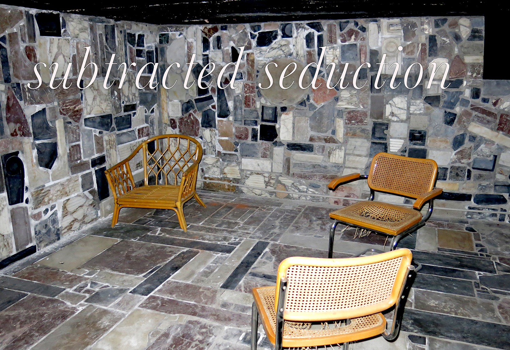

a.pass end-communications
1-2 February 2019

On Friday 1 and Saturday 2 February 2019, from 18:00 to 22:00 Adrijana Gvozdenović, Pia Louwerens and Eleanor Ivory Weber present their artistic researches at the former swingers club, La Porte des Senses, today an art space called Hectolitre, to mark the end of their participation in the a.pass program.
With Subtracted Seduction, their individual researches are framed through shared concepts such as anxiety, non-consensual collaboration, authorship and institutional critique. In each of the three approaches, narratives created through these symptoms of the contemporary artist are investigated. The romantic artist is negated and the multi-faceted artist materialises as both instigator and instigated, made up of multiple voices. The three researchers engage with the complexity of being both unnameable and contained in the knowledge-network immanent to the institution. There appears Subtracted Seduction.
Gvozdenović, Louwerens and Weber all work with writing and performance. They use notions of script and publication as tools to reveal contexts as partners to the doing and thinking of artistic practice. The institutional is key to their approaches, both as a way to understand what predetermines the performativity of the artwork and in how it relates to issues of authorship. The question is often, “who is voicing?”
Pia Louwerens works with spoken-word performances in which she performs an unreliable subject intra-acting with its institutional framework.
Eleanor Ivory Weber uses conceptual writing techniques to arrive at multi-vocal recompositions of existing text-sources, combining formal structures with the spontaneity of the body.
Adrijana Gvozdenović collects and annotates symptomatic artistic practices that recognise their anxiety as a prerequisite state for criticality. This results in publications of sorts or “exhibiting otherwise”.
The concept of the anarchive as a way to reactivate meaning through revisiting traces is a common process to the three researches. Through either activating authored texts, institutional conditions and/or artistic practice paraphernalia, new iterations appear that re-actualise and re-situate the event. Each variation is always already allied with new subjectivities.
-
18:00 food & drinks (€)
18:30 Subtracted Seduction
19:00 Subverses I: Play
(break)
20:00 7 anxieties and the world
20:30 Subverses II: Glossolalien missive
(break)
21:15 Subverses III
21:30 The big gesture is many small gestures dispersed
Performances by:
Adrijana Gvozdenović, Pia Louwerens, Eleanor Ivory Weber
With contributions by:
*Subtracted Seduction: sound editing and mixing Teresa Cos
*Subverses I & III: performers Lydia McGlinchey, Marcus Bergner
*7 anxieties and the world: sound mixing Marko Radišić
Thanks:
Henry Andersen, Simon Asencio, Marcus Bergner, Deborah Birch, Elen Braga, Kate Briggs, Mladen Bundalo, Teresa Cos, Sven Dehens, Nico Dockx, Diego Echegoyen, Paolo Favero, Luisa Fillitz, Nassia Fourtouni, Anastasia Freygang, Nicolas Galeazzi, Camille Gérenton, Caroline Godart, Katinka van Gorkum, Adrijana Gvozdenović, Philippine Hoegen, Eunkyung Jeong, Steven Jouwersma, Ekaterina Kaplunova, Leo Kay, Shervin Kianersi Haghighi, Pauline Hatzigeorgiou, Heike Langsdorf, Joke Liberge, Bart Lescreve, Pia Louwerens, Marialena Marouda, Lydia McGlinchey, Michèle Meesen, Maurice Meewisse, Zoumana Méïté, Lilia Mestre, Wesley Meuris, Vladimir Miller, Caterina Mora, Eszter Némethi, Elizabeth Newman, Anouchka Oler, Goda Palekaitė, Lucia Palladino, Laura Pante, Vijai Patchineelam, Peggy Pierrot, Piero Ramella, Marcelo Rezende, Kate Rich, Esther Rodríguez Barbero, Pierre Rubio, Margaux Schwarz, Hoda Siahtiri, Vanja Smiljanić, Femke Snelting, Geert Vaes, Eleanor Ivory Weber, Camilla Wills, Roberto Winter, Aurore Zachayus, Adva Zakai.
To access the Research Portfolios follow the links:
Adrijana Gvozdenovic
https://apass.be/blockboard/my-case/?user=97
Pia Louwerens
https://apass.be/blockboard/my-case/?user=99
Eleanor Ivory Weber
https://apass.be/blockboard/my-case/?user=98
a.pass (advanced performance and scenography studies) is an artistic research environment that develops research on performativity and the creation of space, in an international artistic and educational context. The environment encourages diverse understandings of artistic research, the development of (post-disciplinary or undisciplined) perspectives and experimentation with methodologies and strategies. a.pass is concerned with reflections on the role and responsibility of the artist- researcher within the vital and precarious economic, political and global context of the here and now.